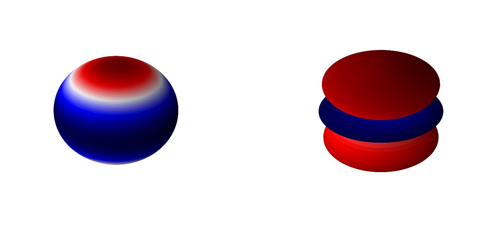
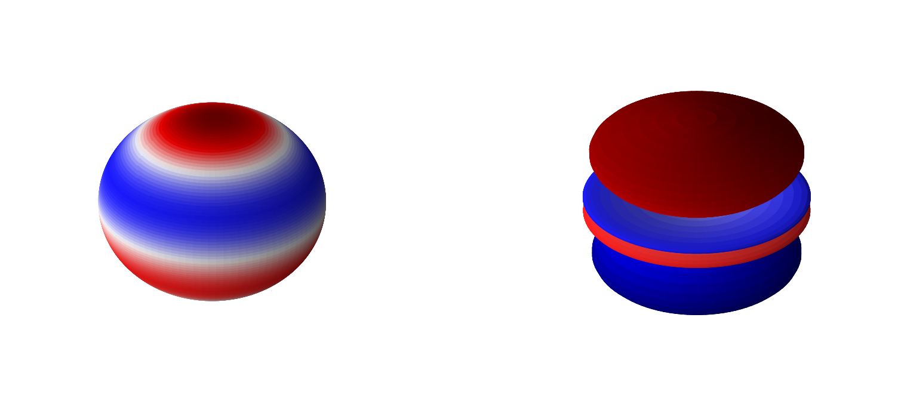
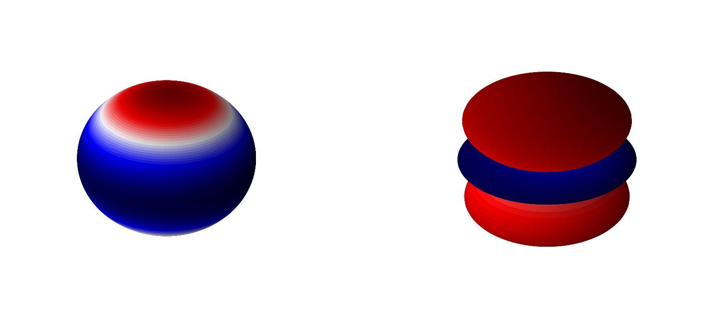
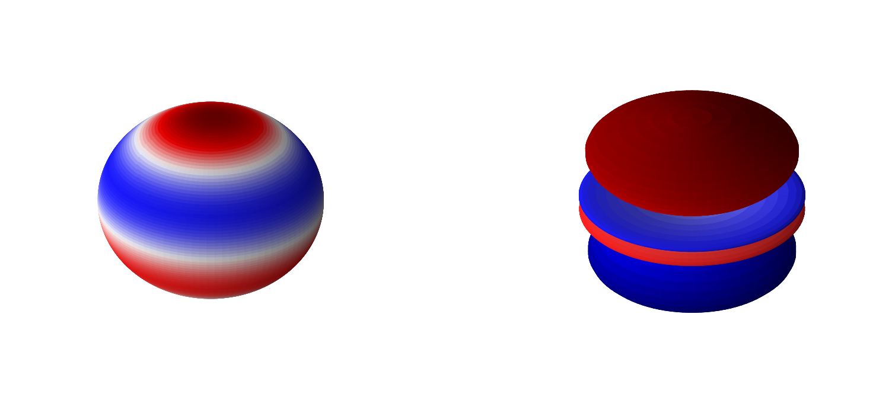
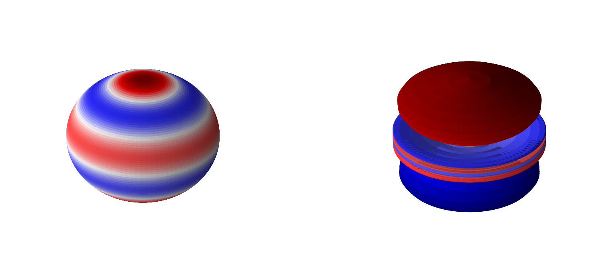
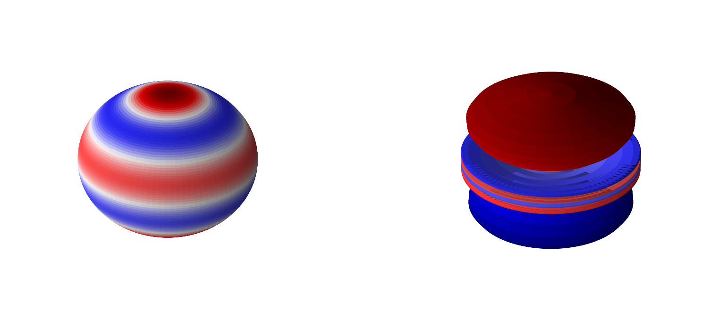

4.5.11. The Hydrogen Atom#
4.5.11.1. Motivation:#
We would like to know how the particle-wave duality hypothesis affects the structure and behavior of atoms and molecules. The simplest case is that of the hydrogen atom, containing only a single electron and a single proton.
4.5.11.2. Learning Goals:#
After working through these notes, you will be able to:
Write out the Hamiltonian for the hydrogen atom (or at least one approximation of the hydrogen atom)
Perform a separation of variables on the hydrogen atom Hamiltonian (to separate \(r\) from \(\theta\) and \(\phi\)).
Identify the \(\theta\) and \(\phi\) wave functions as the spherical harmonics.
Identify the \(r\) wave functions as related to the Laguerre polynomials.
Properties of Laguerre polynomials.
4.5.11.3. Coding Concepts:#
The following coding concepts are used in this notebook:
4.5.11.4. Model of the Hydrogen Atom#
The hydrogen atom is composed of an electron and a proton. If these two particles were classical, the interaction energy would simply be described by the Coulombic attraction between the two particles
\(V(r) = -\frac{e^2}{4\pi\epsilon_0r}\),
where \(r\) is the separation distance between the two particles, \(e\) is the charge of an electron and \(\epsilon_0\) is the permittivity of free space. In the quantum mechanical picture, we will treat this same function as the potential energy operator. The Hamiltonian for a hydrogen atom is then, including the kinetic energy,
\(\hat{H} = -\frac{\hbar^2}{2m_e}\nabla^2-\frac{e^2}{4\pi\epsilon_0r}\)
where \(m_e\) is the mass of an electron and \(\nabla^2\) is the Laplacian in three dimensions. Notice that this Hamiltonian is only in terms of the coordinates of the electron relative to the heavy proton.
4.5.11.5. Solving the Schrodinger Equation by Separating Variables#
Since the potential is a function of \(r\), the separation distance between the proton and the electron, it is useful to write the Laplacian in spherical coordinates. Recall from the rigid rotator that
\(\nabla^2_{r\theta\phi} = \frac{1}{r^2}\frac{\partial}{\partial r}\left(r^2\frac{\partial}{\partial r}\right) + \frac{1}{r^2\sin\theta}\frac{\partial}{\partial\theta}\left(\sin\theta\frac{\partial}{\partial\theta}\right)+\frac{1}{r^2\sin^2\theta}\frac{\partial^2}{\partial^2\phi}\)
Plugging this back into the Schrodinger equation yields
\(\hat{H}\Psi(r,\theta,\phi) = -\frac{\hbar^2}{2m_e}\left[\frac{1}{r^2}\frac{\partial}{\partial r}\left(r^2\frac{\partial}{\partial r}\right) + \frac{1}{r^2\sin\theta}\frac{\partial}{\partial\theta}\left(\sin\theta\frac{\partial}{\partial\theta}\right)+\frac{1}{r^2\sin^2\theta}\frac{\partial^2}{\partial^2\phi}\right]\psi(r,\theta,\phi) +V(r)\psi(r,\theta,\phi) = E\psi(r,\theta,\phi)\)
Multiply through by \(2m_er^2\) to get
\(-\hbar^2\left[\frac{\partial}{\partial r}\left(r^2\frac{\partial}{\partial r}\right) + \frac{1}{\sin\theta}\frac{\partial}{\partial\theta}\left(\sin\theta\frac{\partial}{\partial\theta}\right)+\frac{1}{\sin^2\theta}\frac{\partial^2}{\partial^2\phi}\right]\psi(r,\theta,\phi) +2m_er^2V(r)\psi(r,\theta,\phi) = 2m_er^2E\psi(r,\theta,\phi)\)
Rearrange (combine terms dependent on \(r\)) to get
\(-\hbar^2\left[\frac{1}{\sin\theta}\frac{\partial}{\partial\theta}\left(\sin\theta\frac{\partial}{\partial\theta}\right)+\frac{1}{\sin^2\theta}\frac{\partial^2}{\partial^2\phi}\right]\psi(r,\theta,\phi) -\hbar^2\frac{\partial}{\partial r}\left(r^2\frac{\partial}{\partial r}\right)\psi(r,\theta,\phi)+2m_er^2\left(V(r)-E\right)\psi(r,\theta,\phi) =0\)
Notice that the left-hand term in the above equality is the \(\hat{L}^2\psi\) thus yielding
\(\hat{L}^2\psi(r,\theta,\phi) -\hbar^2\frac{\partial}{\partial r}\left(r^2\frac{\partial}{\partial r}\right)\psi(r,\theta,\phi)+2m_er^2\left(V(r)-E\right)\psi(r,\theta,\phi) =0\).
Now notice that only the left-hand term depends on \(\theta\) and \(\phi\) and only the two right-hand terms depend on \(r\) thus allowing us to write
\(\psi(r,\theta,\phi) = R(r)Y(\theta,\phi)\),
where
\(\hat{L}^2Y(\theta,\phi) = \alpha Y(\theta,\phi) \tag{1}\)
and
\(-\frac{\hbar^2}{2m_er^2}\frac{\partial}{\partial r}\left(r^2\frac{\partial}{\partial r}\right)R(r)+\left[\frac{\alpha}{2m_er^2} + V(r)-E\right]R(r) =0 \tag{2} \).
4.5.11.6. Solutions to the \(\theta\) and \(\phi\) Equation: The Spherical Harmonics#
We know the solutions \(\hat{L}^2\) equation to be the spherical harmonics. Namely
\(\hat{L}^2Y(\theta,\phi) = \hbar^2l(l+1)Y_l^{m}(\theta,\phi)\)
for \(l=0,1,2...\) and \(-l\leq m \leq l\). \(Y_l^{m}(\theta,\phi)\) are the spherical harmonics where it is customary to write them in terms of \(l\) and \(m\) for the hydrogen atom. This yields that
\(\alpha = \hbar^2l(l+1)\).
In these notes we will include the normalization constants of each component with the respective function. That is we define our spherical harmonics as
Below are 3D representations of some of the spherical harmonics.
Show code cell source
# recall what the spherical harmonics look like
# make two plots of the same spherical harmonic
from mpl_toolkits.mplot3d import Axes3D
from matplotlib import cm, colors
import numpy as np
import matplotlib.pyplot as plt
%matplotlib inline
from scipy.special import sph_harm
def plot_spherical_harmonic(m,l,theta=np.linspace(0,np.pi,100),phi=np.linspace(0,2*np.pi,100)):
THETA, PHI = np.meshgrid(theta, phi)
X = np.sin(THETA) * np.cos(PHI)
Y = np.sin(THETA) * np.sin(PHI)
Z = np.cos(THETA)
# Calculate the spherical harmonic Y(l,m) and normalize to [0,1]
fcolors = sph_harm(m, l, PHI, THETA).real
s = np.power(sph_harm(m, l, PHI, THETA).real,2)
s /= s.max()
fmax, fmin = fcolors.max(), fcolors.min()
fcolors = (fcolors - fmin)/(fmax - fmin)
# Set the aspect ratio to 1 so our sphere looks spherical
fig = plt.figure(figsize=(24,12),dpi= 80, facecolor='w', edgecolor='k')
ax = fig.add_subplot(1, 2, 1, projection='3d')
ax.plot_surface(X, Y, Z, rstride=1, cstride=1, facecolors=cm.seismic(fcolors))
ax.set_axis_off()
ax = fig.add_subplot(1, 2, 2, projection='3d')
ax.plot_surface(X*s, Y*s, Z*s, rstride=1, cstride=1, facecolors=cm.seismic(fcolors))
# Turn off the axis planes
ax.set_axis_off()
plot_spherical_harmonic(0,1)
plot_spherical_harmonic(0,2)
plot_spherical_harmonic(0,3)
plot_spherical_harmonic(0,4)
plot_spherical_harmonic(0,5)
plt.show();
 



 

4.5.11.7. Solutions to the \(r\) Equation: The Associated Laguerre Polynomials#
We must now substitute \(\alpha=\hbar^2l(l+1)\) into equation (2) above and solve for the radial part
\(-\frac{\hbar^2}{2m_er^2}\frac{\partial}{\partial r}\left(r^2\frac{\partial}{\partial r}\right)R(r)+\left[\frac{\hbar^2l(l+1)}{2m_er^2} + V(r)-E\right]R(r) =0 \).
This can be solved using power series solutions to differential equations but we will not go through it. Instead we will present the energies and wavefunctions
\(E_n = - \frac{m_ee^4}{8\epsilon_0^2h^2n^2} = - \frac{e^2}{8\pi\epsilon_0a_0n^2}\)
for \(n=1,2,...\) and \(a_0 = \frac{\epsilon_0h^2}{\pi m_ee^2}\) is the Bohr radius. These are actually the same energies obtained from the Bohr model of the hydrogen atom. Also notice that the energies are independent of \(l\). It should be noted that \(n\geq l+1 \) or \(0 \leq l \leq n-1\) for \(n=1,2,..\).
The radial wavefunction solution to the equation above is given as
\(R_{nl} = A_r r^le^{-r/na_0}L_{n+l}^{2l+1}\left( \frac{2r}{na_0}\right)\),
where \(L_{n+l}^{2l+1}\) are the associated Laguerre polynomials. The \(A_r\) factor is the normalization factor that can be determined by requiring
This requirement yields
Below we will plot these functions in terms of the generalized Laguerre polynomials which requires us to replace \(L_{n+l}^{2l+1}\) in the above equation with \(L_{n-l-1}^{2l+1}\) (this is now the generalized form) and remove a factor of \((n+l)!\):
\(R_{nl} = -\left[ \frac{(n-l-1)!}{2n(n+l)!}\right]^{1/2} \left( \frac{2}{na_0}\right)^{l+3/2} r^le^{-r/na_0}L_{n-l-1}^{2l+1}\left( \frac{2r}{na_0}\right)\).
Below is a plot of the first few \(R_{nl}\) functions.
Show code cell source
# let's plot some radial wavefunctions of the hydrogen atom
from scipy.special import sph_harm
from scipy.special import eval_genlaguerre
from scipy.special import factorial
from scipy import integrate
import numpy as np
import matplotlib.pyplot as plt
import warnings
warnings.filterwarnings('ignore')
%matplotlib inline
fontsize = 16
plt.figure(figsize=(10,6),dpi= 80, facecolor='w', edgecolor='k')
plt.tick_params(axis='both',labelsize=fontsize)
plt.grid(which='major', axis='both', color='#808080', linestyle='--')
plt.title("Hydrogen Atom Radial Wave Functions",fontsize=fontsize)
plt.legend(fontsize=fontsize);
# parameters for plotting
nLimit = 3
a0 = 1.0
r = np.arange(0,20,0.01)
for n in range(1,nLimit+1):
for l in range(n):
prefactor = -np.sqrt(factorial(n-l-1)/(2*n*factorial(n+l)))*(2.0/(n*a0))**(l+1.5)*np.power(r,l)*np.exp(-r/(n*a0))
R = prefactor*eval_genlaguerre(n-l-1,2*l+1,2*r/(n*a0))
label = "n=" + str(n) + " l=" + str(l)
plt.plot(r,R,label=label,lw=2)
plt.legend(fontsize=fontsize)
plt.xlabel(r'$r$ (Bohr)',size=fontsize)
plt.ylabel(r'$R(r)$',size=fontsize)
plt.show();
No artists with labels found to put in legend. Note that artists whose label start with an underscore are ignored when legend() is called with no argument.

4.5.11.7.1. Properties of the Associated Laguerre Polynomials#
The radial wave function of the hydrogen atom contains a normalization factor and then three different functions of \(r\):
\(R_{nl}(r) \propto r^le^{-r/na_0}L_{n+l}^{2l+1}\left( \frac{2r}{na_0}\right)\).
Of these, the associated Laguerre polynomials, \(L_{n+l}^{2l+1}\left( \frac{2r}{na_0}\right)\), are relatively unknown to us but have some important (/useful) properties. Before we get into them, here are a few of the first Laguerre polynomials:
\(n, l\) |
\(L_n^{(\alpha)}(x)\) |
|---|---|
\(1, 0\) |
\(L_1^1(x)= -1\) |
\(2, 0\) |
\(L_2^1(x)= -2(2-x)\) |
\(2, 1\) |
\(L_3^3(x)= -3!\) |
\(3, 0\) |
\(L_3^1(x)= -3!(3-3x+\frac{1}{2}x^2)\) |
\(3, 1\) |
\(L_4^3(x)= -4!(4-x)\) |
\(3, 2\) |
\(L_5^5(x)= -5!\) |
A plot of the associated Laguerre polynomials is provided below.
There are two important properties of these functions that we will consider: (1) Differentiation and (2) Orthogonality.
Differentiation
The generalized Laguerre polynomials have the following property when differentiated:
Orthogonality
The generalized Laguerre polynomials hare not orthogonal themselves but are orthogonal over \([0,\infty)\) with weighting function \(x^\alpha e^{-x}\). That is
where \(\Gamma\) is the gamma function and \(\delta_{n,m}\) is defined by
That particular orthogonality condition is not that useful for us but it can also be shown that
This relationship indicates that any two hydrogen atom wave functions differing in primary quantum number \(n\) will be orthogonal.
A related integral is also useful
4.5.11.8. The Complete Solution#
The complete hydrogen atom wavefunctions are a product of the radial and angular components
\(\psi_{nlm_l}(r,\theta,\phi) = R_{nl}(r)Y_l^{m_l}(\theta,\phi)\)
Show code cell source
# make two plots of the same spherical harmonic
from mpl_toolkits.mplot3d import Axes3D
from matplotlib import cm, colors
import numpy as np
import matplotlib.pyplot as plt
from scipy.special import sph_harm
from scipy.special import eval_genlaguerre
from scipy.special import lpmv
from scipy.special import factorial
%matplotlib inline
from scipy.optimize import root
a0 = 1.0 # radial unit of Bohr!
def hydrogen_atom_wf(r,theta,phi,n,l,m):
Y_norm = np.sqrt((2*l+1)*factorial(l-np.abs(m))/(4*np.pi*factorial(l+np.abs(m))))
R_prefactor = -np.sqrt(factorial(n-l-1)/(2*n*factorial(n+l)))*(2.0/(n*a0))**(l+1.5)*np.power(r,l)*np.exp(-r/(n*a0))
R = R_prefactor*eval_genlaguerre(n-l-1,2*l+1,2*r/(n*a0))
return Y_norm*sph_harm(m, l, phi, theta).real*R
def plot_hydrogen_atom_wf(n,l,m, ax_obj, r=np.linspace(0,10,100), theta=np.linspace(0,np.pi,20), phi=np.linspace(0,1.5*np.pi,25)):
R, THETA, PHI = np.meshgrid(r, theta, phi)
R = R.flatten()
THETA = THETA.flatten()
PHI = PHI.flatten()
x = R*np.sin(THETA)*np.cos(PHI)
y = R*np.sin(THETA)*np.sin(PHI)
z = R*np.cos(THETA)
wf = hydrogen_atom_wf(R,THETA,PHI,n,l,m)
vmax = max(np.abs(np.amin(wf)),np.abs(np.amax(wf)))
vmin = -vmax
# plot
ax_obj.set_title(rf'$n={n},l={l},m={m}$', fontsize=18)
ax_obj.scatter3D(x,y,z,c=wf, cmap='RdBu', vmin=vmin, vmax=vmax,alpha=0.25)
ax_obj.set_box_aspect((100,100,100))
#ax_obj.set_axis_off()
ax_obj.axes.xaxis.set_ticklabels([])
ax_obj.axes.yaxis.set_ticklabels([])
ax_obj.axes.zaxis.set_ticklabels([])
def plot_hydrogen_atom_wf_xz_projection(n,l,m, ax_obj):
x = np.linspace(-10,10,1000)
z = np.linspace(-10,10,1000)
X, Z= np.meshgrid(x, z)
Y = np.zeros(X.shape)
R = np.sqrt(X*X + Y*Y + Z*Z).flatten()
THETA = np.arccos(Z.flatten()/R)
PHI = np.arctan2(Y,X).flatten()
wf = np.zeros(R.shape)
wf = hydrogen_atom_wf(R,THETA,PHI,n,l,m)
wf = wf.reshape(X.shape)
vmax = max(np.abs(np.amin(wf)),np.abs(np.amax(wf)))
vmin = -vmax
# plot
ax_obj.set_title(rf'$n={n},l={l},m={m}$', fontsize=18)
c = ax_obj.pcolormesh(X, Z, wf, cmap='RdBu', vmin=vmin, vmax=vmax)
# set the limits of the plot to the limits of the data
ax_obj.axis([-10, 10, -10, 10])
ax_obj.set_aspect('equal')
#ax_obj.set_axis_off()
return c
def plot_particle_in_sphere_wf_xy_projection(n,l,m, ax_obj):
x = np.linspace(-1,1,100)
y = np.linspace(-1,1,100)
z = np.zeros(100)
X, Y= np.meshgrid(x, y)
Z = np.zeros(X.shape)
R = np.sqrt(X*X + Y*Y + Z*Z).flatten()
THETA = np.arccos(Z.flatten()/R)
PHI = np.arctan2(Y,X).flatten()
wf = np.zeros(R.shape)
indeces = np.argwhere(R <= 1)
wf[indeces] = particle_in_sphere_wf(R[indeces],THETA[indeces],PHI[indeces],n,l,m)
wf = wf.reshape(X.shape)
# plot
ax_obj.set_title(rf'$n={n},l={l},m={m}$', fontsize=18)
c = ax_obj.pcolormesh(X, Y, wf, cmap='RdBu', vmin=-0.2, vmax=0.2)
# set the limits of the plot to the limits of the data
ax_obj.axis([-1, 1, -1, 1])
ax_obj.set_aspect('equal')
ax_obj.set_axis_off()
return c
Show code cell source
fig, ax = plt.subplots(3,3,figsize=(16,12),dpi= 80, facecolor='w', edgecolor='k',subplot_kw={'projection': '3d'})
for n in range(1,4):
for l in range(3):
if l < n:
plot_hydrogen_atom_wf(n,l,0,ax[n-1,l])
else:
ax[n-1,l].set_axis_off()
plt.show();

Show code cell source
fig, ax = plt.subplots(3,3,figsize=(16,12),dpi= 80, facecolor='w', edgecolor='k')
for n in range(1,4):
for l in range(3):
if l < n:
plot_hydrogen_atom_wf_xz_projection(n,l,0,ax[n-1,l])
else:
ax[n-1,l].set_axis_off()
plt.show();